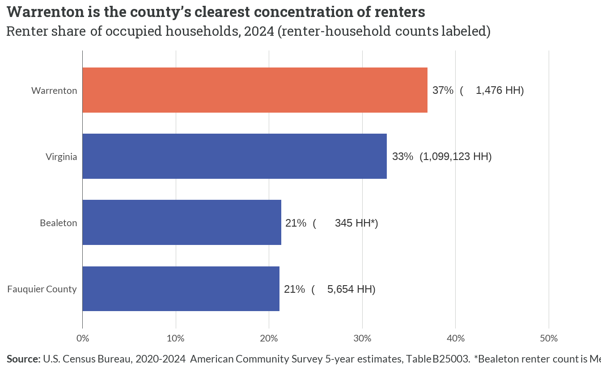
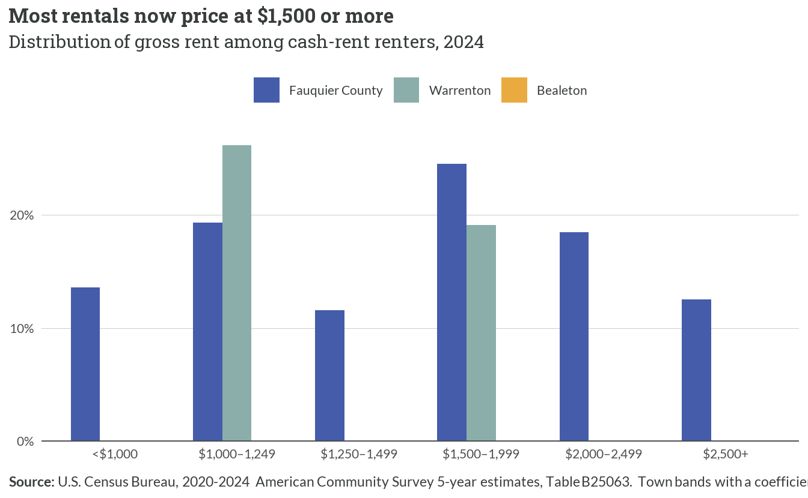
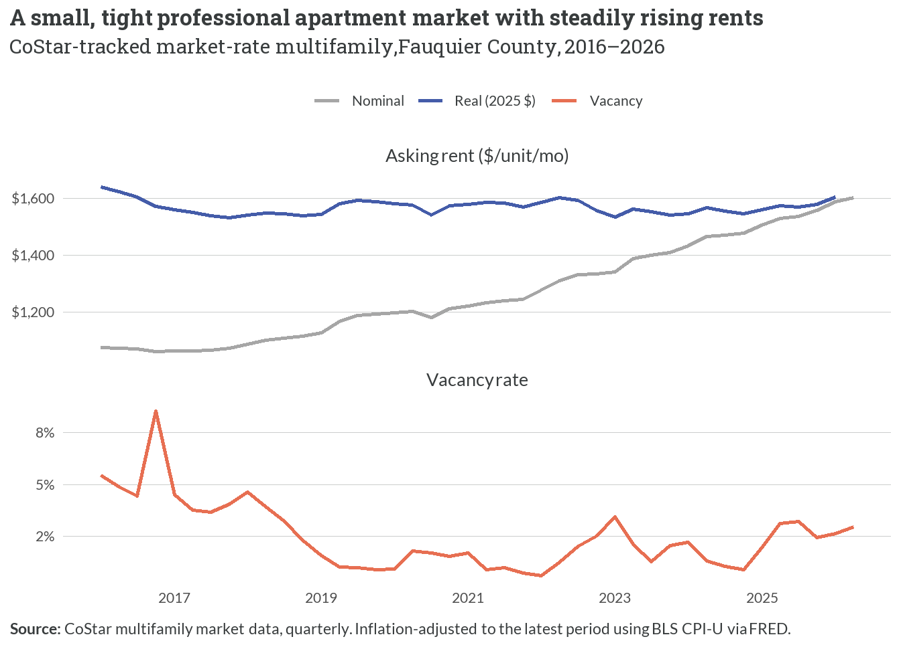
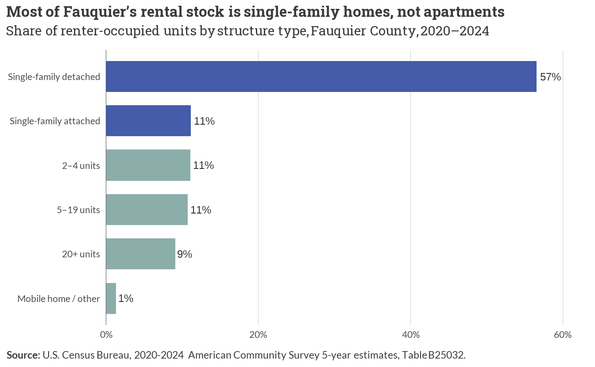
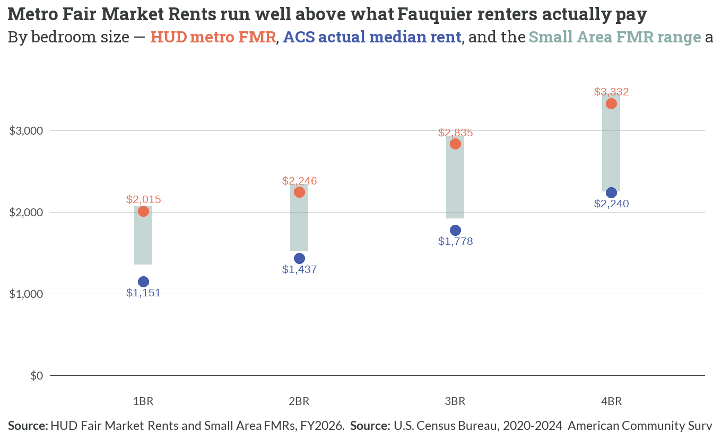

4 The Rental Market
4.1 Who rents
- Fauquier is overwhelmingly an ownership county — only about 21% of households rent, below Virginia’s 33%.
- Warrenton is the exception: roughly 37% of the town’s 3,985 households rent — nearly double the county rate and the county’s principal rental submarket.
- Bealeton tracks the county (~21% renter); its renter count is small and carries Medium reliability, so it is read as a count, not a precise rate.
4.2 What renters pay

- The county’s median gross rent rose from $1,138 (2013) to $1,613 (2024) — +42% nominal, +10% in real terms — so renters have lost ground even after inflation.
- CoStar professional asking rents (~$1,604, adjusted) sit at or just above the ACS median, consistent with a small stock of newer market-rate apartments pricing above the broader rental pool.
- Town rents track the county: all Warrenton and Bealeton rent cells are High reliability, and both towns’ 2024 medians sit within roughly $50–$200 of the county figure.
4.3 Where the rental stock prices

- The modal rent band is $1,500–1,999 (about 25% of county cash-rent renters); combined with the bands above it, most renters now pay $1,500 or more.
- Sub-$1,000 rentals are scarce — only about 14% of the county’s renters — underscoring how little of the stock is affordable to lower-income households.
- Place-level distributions are noisy; only the higher-count Warrenton bands survive the reliability screen, and they mirror the county’s upward concentration.
4.4 The professional apartment market

- The professional market is tiny: about 998 market-rate units across 14 CoStar-tracked apartment properties (roughly 41 multifamily properties appear in the broader CoStar inventory).
- Asking rent reached ~$1,603/unit (nominal, latest quarter); in constant 2025 dollars asking rents are roughly flat near $1,604 — professional operators have kept pace with, not outrun, inflation.
- Vacancy is very low — recently about 2.8%, and under ~3% for most of the past decade — a persistently tight market with little slack.
4.5 Rental stock by structure type

- Single-family homes are the backbone of the rental market: detached and attached houses together are about 68% of all renter-occupied units — single-family detached alone is ~57%.
- Purpose-built apartments (5+ units) are only ~20% of rentals — the mirror image of Figure 4.4’s thin professional market, and why so much of the rental supply behaves like the for-sale market.
- The reliance on scattered single-family rentals means renters compete for the same limited housing stock as buyers; place-level structure detail is too small to size reliably, so this is shown county-wide.
4.6 Fair Market Rents vs. actual rents

- Because Fauquier is folded into the high-cost Washington, D.C. metro FMR area, the county’s 2BR FMR ($2,246) sits far above the actual ACS median 2BR rent ($1,437) — a gap of roughly $800.
- Small Area FMRs pull the benchmark toward local reality but still land above the ACS median at every bedroom size: the town-ZIP 2BR SAFMR ranges $1,520–$2,340, with Bealeton (22712) lowest.
- The practical implication is favorable for voucher holders — generous payment standards — but it means FMRs overstate the going market and are a poor gauge of local affordability; the ACS medians (Figure 4.2) are the better yardstick.
4.7 Assisted inventory & preservation risk
| Property | City | Units | Assisted units | Programs | Earliest expiration |
|---|---|---|---|---|---|
| Oaks Ii | Warrenton | 96 | 111 | 9% Tax Credit | Jan 2027 |
| Highland Commons | Warrenton | 96 | 96 | 9% Tax Credit | Jan 2031 |
| Countryside Bealeton | Bealeton | 8 | 8 | 9% Tax Credit | Jan 2031 |
| Aspen Village | Bealeton | 108 | 138 | 4% Tax Credit, 9% Tax Credit | Jan 2032 |
| Warrenton Manor | Warrenton | 98 | 166 | 9% Tax Credit, HFDA/8 NC | Jun 2033 |
| Hunt Country Manor | Warrenton | 56 | 55 | 4% Tax Credit | Jan 2034 |
| Academy Hill | Warrenton | 31 | 31 | 515 Rural Housing | Jul 2034 |
| Millview | Remington | 28 | 39 | 9% Tax Credit, HOME | May 2036 |
| Moffett Manor | Warrenton | 98 | 98 | 9% Tax Credit | Jan 2038 |
| Remington Group Home | Remington | 6 | 6 | PRAC/811 | Mar 2038 |
| Piedmont Lane At The Plains | The Plains | 16 | 16 | 9% Tax Credit | Jan 2043 |
| Washburn Place | Marshall | 30 | 30 | 9% Tax Credit | Jan 2047 |
| Mintbrook Senior Apartments | Bealeton | 80 | 80 | 9% Tax Credit | Jan 2048 |
| **Source:** National Housing Preservation Database (NHPD). Assisted-unit counts may exceed total units where a property carries overlapping subsidies. Programs list active subsidy types per property. |
- Fauquier’s assisted stock is 874 assisted units across 13 federally supported properties — a small cushion against the market rents documented above.
- Preservation risk is real and near-term: the soonest subsidy expiration is January 2027, and 8 of the 13 properties have a subsidy expiring by 2036 — the window in which preservation decisions must be made.
- The program mix is dominated by Low-Income Housing Tax Credit deals, with a handful of older project-based Section 8, Section 202, and USDA Rural Housing (515) properties whose subsidies are the closest to expiring.
NoteTown spotlight — assisted units concentrate in and around Warrenton
Most of the county’s assisted properties sit in Warrenton (and nearby Remington), the same submarket that carries the county’s highest renter share (Figure 4.1). Bealeton has little to no dedicated assisted inventory in the NHPD record — so the affordable options there are effectively limited to whatever scattered single-family and market-rate units price low, which Figure 4.3 shows is a shrinking share.
4.8 What the interviews said vs. what the data shows
ImportantInterview validation
- “Only about 2 of 19 available rentals were priced under $1,700 (spring 2026).” Confirmed and nuanced. In 2025 the MLS recorded 28 of 203 closed leases under $1,700 (about 14%), with a median lease of $2,450 — a somewhat larger affordable share than the single snapshot suggested, but the same story: sub-$1,700 rentals are scarce and most of the market prices well above (Figure 4.3, Figure 4.2).
- “There aren’t enough apartments — most rentals are just houses.” Confirmed. Purpose-built apartments (5+ units) are only ~20% of the rental stock and the professional market spans just 14 tracked properties (Figure 4.5, Figure 4.4); single-family homes carry ~68% of all rentals.
- “Affordable, subsidized units are limited and aging.” Confirmed and nuanced. Only 874 assisted units exist county-wide (Table 4.1), concentrated around Warrenton, and 8 of 13 assisted properties face subsidy expiration within about a decade — a preservation challenge layered on top of an already thin affordable supply.